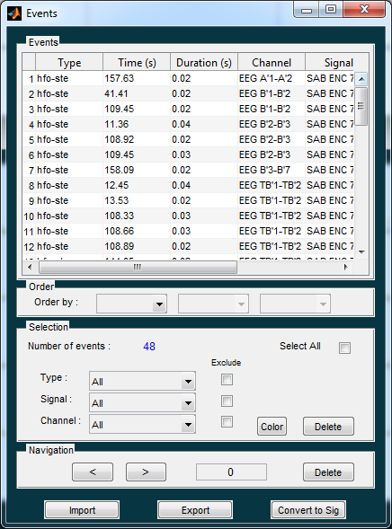

Event window¶
To see the event window, go to Events>See Events, or use Ctrl-E :

Event window
The event window is composed of five parts :
- Events : list the characteristics of all selected events: type, time of event, duration of event, channel of event and the signal where this event appears.
- Order : allow to order the events given one event parameter. Up to three criteria can be combined to order the events. In this case, the events are first ordered given the first criteria, then the second one is applied and finally the third.
- Selection : allow to select some events based on Type, Signal or Channel criteria. Use Select All to select all the events. Use Exclude check boxes to unselect some events. This panel also permit to delete the selected events using the Delete buton
- Navigation : allow to navigate through events and to delete the current event.
- Import and Export : use these buttons to either import all the current events or to import previously stored events.